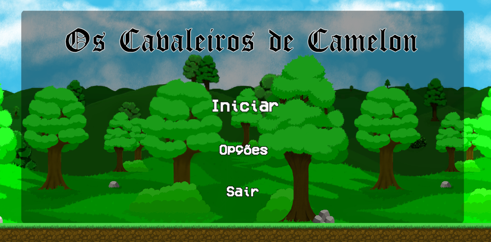

O reino de Camelon busca sempre por mais riqueza. Nesse mundo, existem cavernas inexploradas que, segundo as lendas, carregam tesouros antigos da humanidade, muito valiosos para venda. Essas cavernas são infestadas por criaturas poderosas e muitos exploradores já perderam a vida durante explorações no passado. Por causa disso, o rei incluiu parte do exército real para as buscas. Junte-se aos 3 cavaleiros mais poderosos do reino, Ragnar, Jeanne e Lancelot, e viaje por vários lugares até chegar na caverna e encontrar os tesouros.